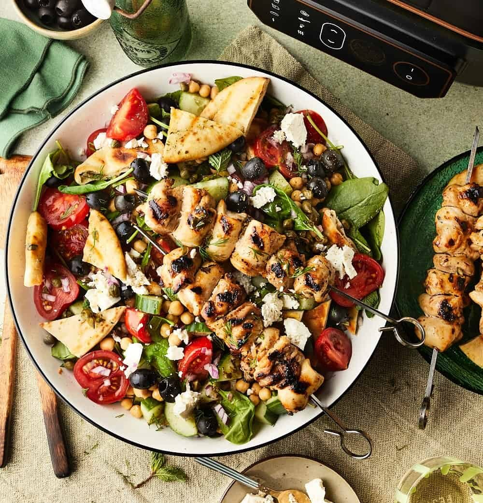

Griekse maaltijdsalade met gegrilde kip

Ingridiënten
- 3 takjes verse oregano
- 2 citroenen sap en rasp
- 3 el honing
- 7 el olijfolie
- 2 el witte wijnazijn
- 1 tl paprikapoeder
- 500 gr kippendijfilets
- 3 platbroodjes
- 1 blik kikkererwten 400 gr
- 380 gr tomaten
- 1 komkommer
- 2 el kappertjes
- 100 gr spinazie
- 4 el pitloze zwarte olijven
- 1 rode ui
- 100 gr feta
- 3 takjes verse dille
- 2 takjes verse munt
- Peper en zout
Bereiding
-
Hak de blaadjes van de oregano fijn. Meng in een ruime kom het sap en
rasp van de citroen, honing, fijngehakte oregano, 6 eetlepels olijfolie,
witte wijnazijn en paprikapoeder. En breng op smaak met peper en zout.
Houd een 5 eetlepels apart voor de dressing.
-
Leg de kippendijen in het overgebleven citroenmengsel en laat ze 20
minuten marineren.
-
Leg de platbroden op een plank en bestrijk met 1 el olijfolie. Grill ze
in Satisfry. Leg het grillrooster in het apparaat. Zet je de grillstand
aan op 260 graden. Het apparaat verwarmt eerst voor, stel daarna in op 4
minuten. Keer het brood halverwege om. Scheur of snijd het brood in
stukken. Grill 1 platbrood per keer.
-
Laat de gemarineerde kip uitlekken, snijd in stukjes en rijg aan
spiesjes. Zet opnieuw de slowcooker op de grillstand en 260 graden, laat
het apparaat voor verwarmen en stel dan in op 8 minuten. Leg de spiesen
naast elkaar in het apparaat en keer ze halverwege om.
-
Spoel de kikkererwten af en laat goed uitlekken. Halveer ondertussen de
tomaten en snijd de komkommer in stukjes, leg ze in een grote schaal.
Voeg de kikkererwten, kappertjes, spinazie en olijven toe.
-
Hak de rode ui, dille en munt fijn. Meng ze met de apart gehouden
citroendressing en breng eventueel verder op smaak met zout en peper.
Schenk de dressing over de groenten in de schaal. Schep de stukken
gegrild platbrood erdoor en verkruimel de feta over de salade. Serveer
met de gegrilde kip spiesjes.